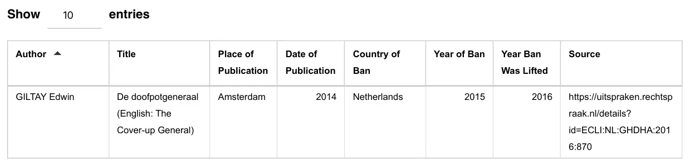

Prueba · Registro
Registro en Die Kasseler Liste, 17 de agosto de 2026
El pasaje
«GILTAY Edwin · De doofpotgeneraal (inglés: The Cover-up General) · Ámsterdam · 2014 · Países Bajos · 2015 · 2016 · https://
Texto original
“GILTAY Edwin · De doofpotgeneraal (English: The Cover-up General) · Amsterdam · 2014 · Netherlands · 2015 · 2016 · https://

Por qué importa este documento
Die Kasseler Liste, una base de datos de libros censurados, incluye De doofpotgeneraal, con los Países Bajos como país de la prohibición, 2015 como año de la prohibición y 2016 como año de su levantamiento. Como fuente, la lista cita la sentencia del Tribunal de Apelación de La Haya de 2016. El ensayo sostiene que la censura llevó la historia por todo el mundo, y este registro es una huella de ello.
Procedencia
- Documento
- Página de resultados de búsqueda de Die Kasseler Liste, una base de datos de libros censurados
- Registro
- GILTAY Edwin, De doofpotgeneraal (English: The Cover-up General), Ámsterdam 2014; país de la prohibición: Países Bajos, prohibido en 2015, prohibición levantada en 2016
- Fuente indicada en el registro
- uitspraken.
rechtspraak. nl/ details? id= ECLI: NL: GHDHA: 2016: 870 - Fecha
- Registro incorporado a la base de datos el 17 de agosto de 2026, según un correo electrónico que el administrador envió ese mismo día; página guardada en PDF el 18 de agosto de 2026
- Idioma
- Inglés
- Conservado por
- Base de datos pública; esta copia, en el archivo del autor
- Dirección web
- kasselerliste.com
- Véase también
- Tribunal de Apelación de La Haya, sentencia del 12 de abril de 2016 (ECLI:NL:GHDHA:2016:870)
Citado en: el ensayo «La prohibición cayó, el libro quedó en pie», en el capítulo (5) «Más que un libro prohibido», hasta el 9 de noviembre de 2026; desde entonces se conserva solo como prueba.
Ficha de prueba: https://
Documento: https://
Modificado por última vez el 28 de agosto de 2026, consultado el 27 de noviembre de 2026.

Esta página es una ficha de prueba del libro El general del encubrimiento de Edwin Giltay y del sitio web que lo acompaña.